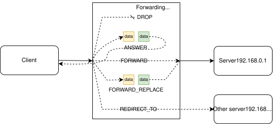

Forwarding Machine
Scapy’s ForwardMachine is a utility that allows to create a server that forwards packets to another server, with the ability
to modify them on-the-fly. This is similar to a “proxy”, but works on the layer 4 (rather than 5+). The ForwardMachine was initially designed to be used with TPROXY,
a linux feature that allows to bind a socket that receives packets to any IP destination (usually, a socket only receives packets whose destination is local), but it also work as a standalone server (that binds a normal socket).
A ForwardMachine is expected to be used over a normal Python socket, of any kind, and needs to extended with two
functions: xfrmcs and xfrmsc. The first one is called whenever data is received from the client side (client-to-server, “cs”), the other when the data
is received from the server (server-to-client, “sc”)
ForwardMachine can be used in two modes:
TPROXY, acts as a transparent proxy that intercepts one or many connections towards multiple servers
SERVER, acts like a glorified socat that accepts connections towards the local server
Basic usage
Here’s an example of a ForwardMachine over TPROXY that does nothing. Packets for all destinations are handled, and forwarded to their
initial destinations afterwards. More details on how to setup TPROXY are provided below.
from scapy.fwdmachine import ForwardMachine
from scapy.layers.http import HTTP
class NOPFwdMachine(ForwardMachine):
def xfrmcs(self, pkt, ctx):
pkt.show() # we print the client->server packets
raise self.FORWARD()
def xfrmsc(self, pkt, ctx):
pkt.show() # we print the server->client packets
raise self.FORWARD()
# Run it
NOPFwdMachine(
mode=ForwardMachine.MODE.TPROXY,
port=80,
cls=HTTP, # we specify the class of the payload we are receiving
).run()
The callback classes use Operations to tell the ForwardMachine what to do with the incoming data.

The main operations available in a Forwarding machine, in this case in xfrmcs.
There are currently 5 operations available:
FORWARD: forward the received payload to the destination intended by the peer;
FORWARD_REPLACE: forward a modified payload to the intended destination;
DROP: drop the received payload;
ANSWER: answer the peer directly with a payload, without forwarding its original payload to the other peer;
REDIRECT_TO: (client-side only) redirects the connection of the client towards a new remote peer.
The ctx attribute in the callbacks contains context relative to the current client. It can also be use to
store additional data specific to the session.
If we were to use this machine in SERVER mode, we would call it like:
NOPFwdMachine(
mode=ForwardMachine.MODE.SERVER,
port=12345,
bind_address="0.0.0.0", # the address we bind on
remote_address="192.168.0.1", # the server to redirect this to by default
cls=conf.raw_layer, # Default Raw layer: we don't know the type of data
).run()
TLS support
ForwardMachine has support for TLS through the ssl=True argument. When TLS is enabled, the SNI (Server Name Indication) is
properly forwarded to the remote peer, and can be accessed through the ctx.tls_sni_name attribute in the callbacks.
By default, a ForwardMachine generates self-signed certificates that copy the attributes from the certificate of the remote server. This behavior can be changed by specifying a certificate (which will be served by the TLS stack).
We can run the same ForwardMachine as from the previous example, this time with self-signed TLS.
# Run it
NOPFwdMachine(
mode=ForwardMachine.MODE.SERVER,
port=443,
cls=HTTP,
ssl=True,
).run()
Configuring TPROXY
TPROXY is a special socket mode that allows to bind a socket that listens for traffic that isn’t directed at a local address. This is typically used by “transparent TLS proxies” to achieve their functionality, and is expected to be setup on a linux router.
The ForwardingMachine supports TPROXY, which allows to intercept and modify all the traffic by many clients to many destinations, for instance on a specific port. This is much more versatile that a classic bind + socket, which would typically forward multiple clients to a single destination.
Here are the steps:
Setup an interface that one can redirect traffic to, and that has TPROXY support.
Bind the
ForwardingMachineon that interface.Redirect some traffic to that interface, using
iptablesornftables, based on some arbitrary criteria.
For ease of use, a script vethrelay.sh is provided to setup a veth (virtual ethernet) interface that can be used to bind the ForwardingMachine on. This script is available at https://github.com/secdev/scapy/blob/master/doc/scapy/_static/vethrelay.sh
./vethrelay.sh setup
Interface vethrelay is now setup with IPv4: 2.2.2.2 !
Add listening rules as follow:
# TPROXY incoming TCP packets on port 80 to vethrelay on port 8080
iptables -t mangle -A PREROUTING -p tcp --dport 80 -j TPROXY --tproxy-mark 0x1/0x1 --on-port 8080 --on-ip 2.2.2.2
# Listen on wlp4s0 for incoming packets on port 80 (on the interface where it really comes from)
iptables -A INPUT -i wlp4s0 -p tcp --dport 80 -j ACCEPT
As the instructions say, to have traffic to anything on the port 80 go through the ForwardingMachine, one can run the commands listed above assuming that the machine is started as such:
NOPFwdMachine(
mode=ForwardMachine.MODE.TPROXY,
port=8080,
cls=HTTP,
).run()